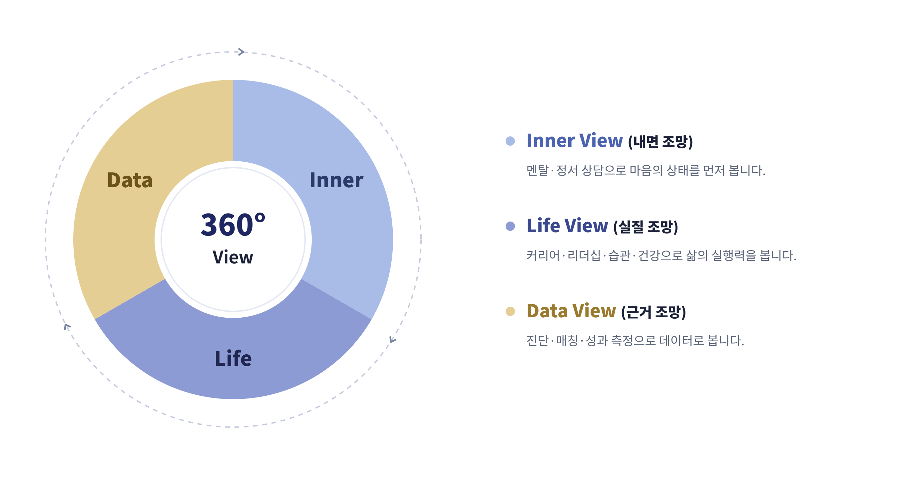

왜 옴니뷰인가
사람을 한 면이 아니라 모든 각도에서 조망합니다. 내면(마음)과 외면(커리어·삶·성과)을 하나의 시야에 담아, 데이터라는 근거 위에서 성장을 설계합니다.
Omni(모든) + View(시선)
마음부터 성과까지.
한 면이 아니라 360도로 조망하는 통합 코칭.
멘탈 케어와 커리어 코칭을 하나의 시야에 담아, 데이터로 성장을 설계합니다.
한 각도가 아니라, 모든 각도에서.
우리가 본 문제
마음을 보는 상담과 성과를 보는 코칭은 늘 나뉘어 있었습니다. 그래서 문제의 진짜 원인은 늘 사각지대에 남았습니다.
마음은 다뤄지지만, 그 불안이 커리어의 어떤 구조에서 오는지는 다루지 못합니다.
성과는 다뤄지지만, 실행을 가로막는 마음의 패턴은 사각지대에 남습니다.
마음과 성과를 하나의 시야에 담고, 진단 데이터로 교차 검증합니다. 사각지대가 사라집니다.
3-View · 우리가 보는 방식

Inner View
멘탈·정서 상담으로 마음의 상태를 먼저 봅니다.
Life View
커리어·리더십·습관·건강으로 삶의 실행력을 봅니다.
Data View
진단·매칭·성과 측정으로 데이터로 봅니다.
세 시선이 겹치는 곳에서, 진짜 변화가 시작됩니다.
우리가 지키는 것
모든 코칭은 진단에서 시작하고 측정으로 끝납니다. 직관이 아닌 데이터로 말합니다.
세션 내용은 암호화 보관되며, 본인 동의 없이 누구에게도 공유되지 않습니다.
자격·경력·수퍼비전 3중 기준을 통과한 전문가만 함께합니다.
첫 세션 후 전액 환불, 전문가 무료 교체. 만족을 조건 없이 보장합니다.